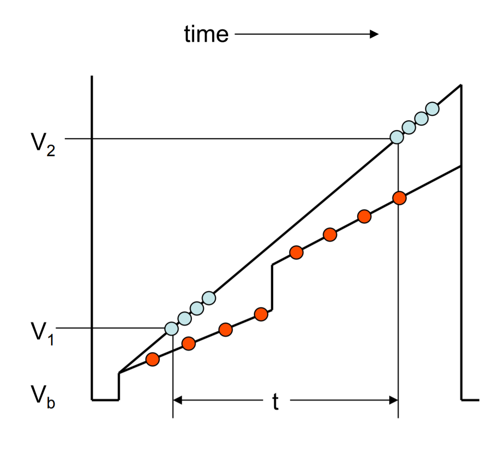
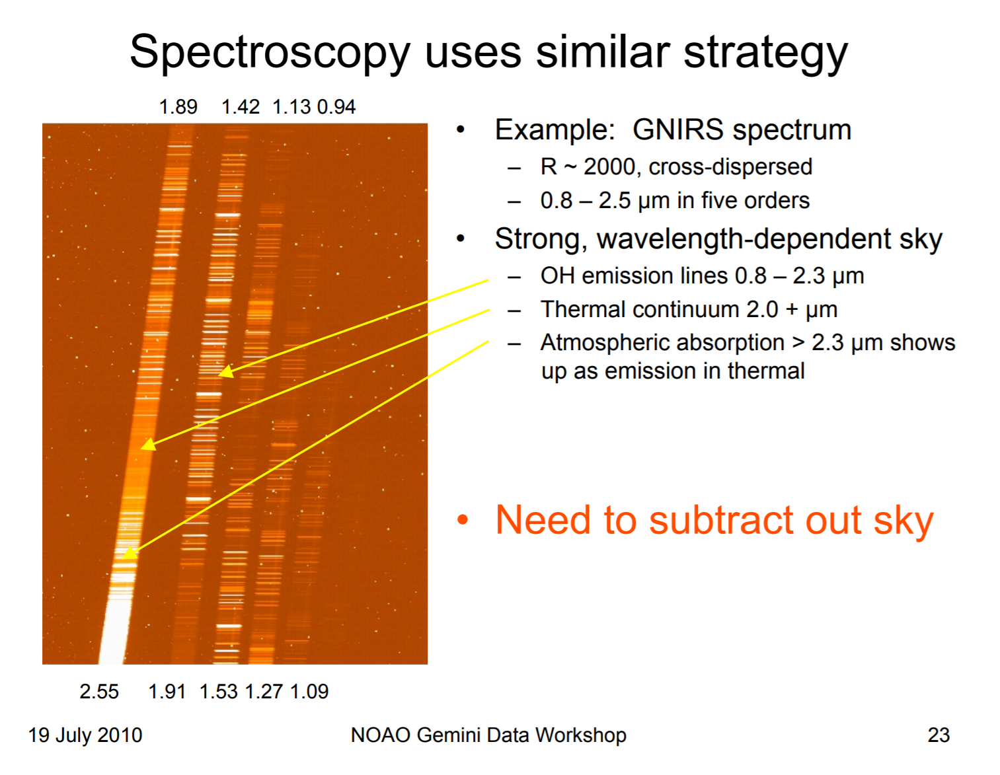

红外探测器¶
来源：https://www.noao.edu/meetings/gdw/files/Joyce_IR.pdf
原理以及选材¶
禁带的宽度决定了材料对什么光子是最敏感的。比如说Si的禁带宽度大概是1eV，那么它对1.24µm的光子最敏感，这是近红外。HgCdTe是0.48 eV和2.55 µm、InSb是0.23 eV和5.4 µm。在Si里面掺点儿As的话，这两个数字就变成了48 meV和26 µm，这是中红外。
“先进”技术：非破坏性读出¶
CCD的读出方式是破坏性的：读完电压就被移动了，也就是没了。在CMOS上人们发明了在读出时不用破坏电压的方法，就是非破坏性读出(Nondestructive readout, NDR)，专利在这里。

如上图，在一头一尾读出\(N\)次可以减少读出误差至原来的\(1/\sqrt{N}\)，还能吧bias到开始曝光时的电压跳变给排除；而等间隔的NDR可以探测到像素因为宇宙线带来的度数跳变，使得这个像素的信息不被宇宙线淹没，所以常用在空间探测器上。
观测的问题¶
第一是电子有热运动，能量\(~kT\)，所以波长越长热运动越厉害，热电子（不想要的电子越多）。解决办法：将探测阵列降温。
种类 |
有效波长 |
温度 |
例子 |
|---|---|---|---|
Si CCD |
0.3 – 1 µm |
170 K |
GMOS |
HgCdTe |
0.8 – 2.5 µm |
75 – 80 K |
NIFS, NICI, FLAMINGOS2 |
InSb |
0.8 – 5.4 µm |
30 K |
NIRI, GNIRS, PHOENIX |
Si:As |
5 – 28 µm |
12 K |
MICHELLE, TReCS |
第二探测器周围的物体也有热辐射，所以有的时候周围的光学器件也得降温；这点WINERED就做得很好，仅仅是探测器要降温。
第三也是最难去除的一点是背景天光的亮度。 在红外，天光是很亮的，所以我们在拍科学图像之前或者之后还得拍天光、平场和暗场，而且天光的去除需要在第一步进行。如果是测光的话我们还可以用dithering（围着一个点拍好多张照片给）来去除天光，效果就很不错了。当然dithering外面那一圈的误差还是不小的。 对于恒星密集的地方，dithering不管用，就只能老实拍天光了。
还有一点是中红外特有的。中红外的天光实在是太强，以至于曝光50ms就会饱和。解决方法是将单次曝光时间减到很短(20ms)，然后将信号叠加起来。同时拿出一块探测器来拍隔壁的天光，再用nodding去保证天光和科学frame是吻合的。

光谱也是类似的，不过可以用nodding来解决大部分问题。